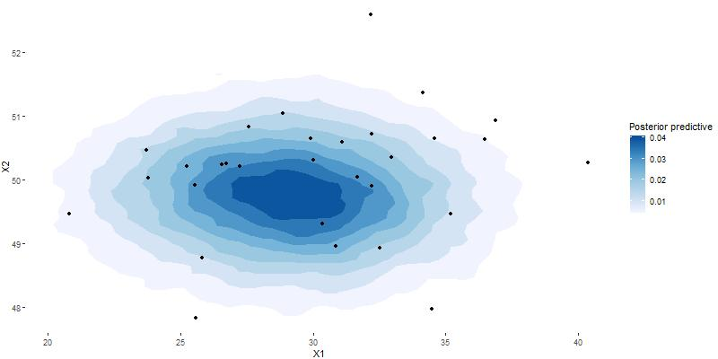

Il est classique de considérer que ces grandeurs ont le sens de quantiles d’une loi prédictive a priori sur une grandeur X dont on cherche à inférer, en présence de données x1,…,xn, la loi a posteriori. En introduisant un vecteur de paramètre θ, de loi a priori Ï€(θ), la loi a priori prédictive est f(x) = ∫ f(x|θ)Ï€(θ)dθ

Overleaf is popular online LaTeX editor. It can generate PDF files without need to install a local TeX distribution. Unfortunatelly, it doesn’t support conversion to HTML out of the box. To get the HTML version of the document, we must use some tricks.
There are many tools that support the conversion from LaTeX to HTML, each of them use a different approach. I am a developer of TeX4ht, so I will present solution that uses this tool.
TeX4ht uses TeX for the actual conversion. It loads special configuration files for internal LaTeX code or for the used packages. These configuration files patch commands with special instructions that insert HTML (or other supported formats). Because it uses TeX for the actual conversion, it supports custom commands. It also supports font changing commands, so it doesn’t need custom configurations in many cases.
The first method that use TeX4ht for the conversion was presented by LianTze Lim. It uses a custom build file for Latexmk that calls TeX4ht. The downside is that the generated HTML file is not easilly accessible.
To make the conversion easier, I’ve set up Docker image for TeX4ht. Thanks to GitHub Actions, it is possible to use this image for the conversion of the Overleaf document to HTML. The generated files can be published on the web using Github Pages, where they can be automatically updated on every document change. This document is an example of this setup.
First step is to sync your Overleaf project with your GitHub account, following a guide on Overleaf. Don’t forget to run the Sync -> GitHub command from Overleaf main menu every time you had updated the document.
Next step is to configure actions in the Github project created for your document. Two steps are necessary – first one compiles the document to HTML using TeX4ht, the second step publishes the generated HTML files on the Web using GitHub Pages
For the web publishing we use the actions-gh-pagesaction.
When the keys are set up, you can create the workflow file. Select the Actions tab and click the Set up a workflow yourself button. It will open an editor with a YAML file for the Action workflow. Replace it with the following content:
name: CI on: [push] jobs:   build:     runs-on: ubuntu-latest     steps:     - uses: actions/checkout@v1     - name: Run make4ht       uses: docker://ghcr.io/michal-h21/make4ht-action:latest       env:         command: "make4ht -u -d out main.tex"     - name: Publish the web pages       uses:  peaceiris/actions-gh-pages@v3       with:         github_token: ${{ secrets.GITHUB_TOKEN }}         publish_dir: ./out
The important part of the configuration is the command key. It contains the actual command used for the compilation. We use Make4ht, build system for TeX4ht.
Command "make4ht -u -d out main.tex" creates UTF-8 encoded HTML file from the main.tex input file. The -d option specifies the output directory for the HTML files. This directory will be used for the web publishing and should be passed to the publish_dir key in Publish the web pages step.
The web will be published at https://yourgitubusename.github.io/project_name/main.html.